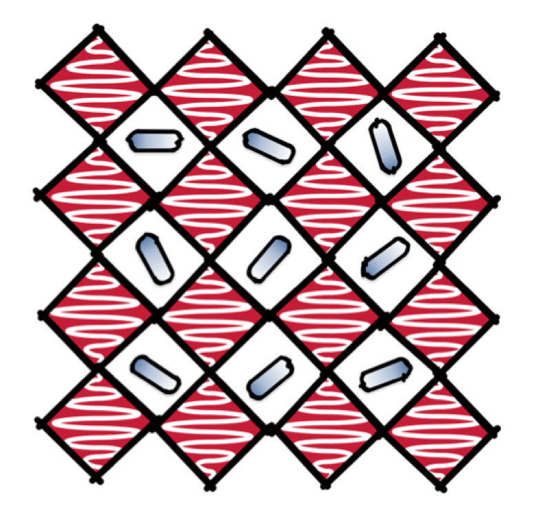
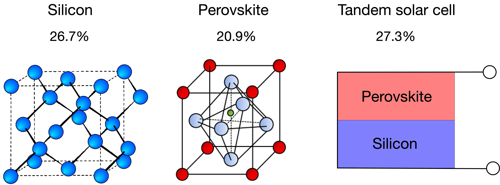
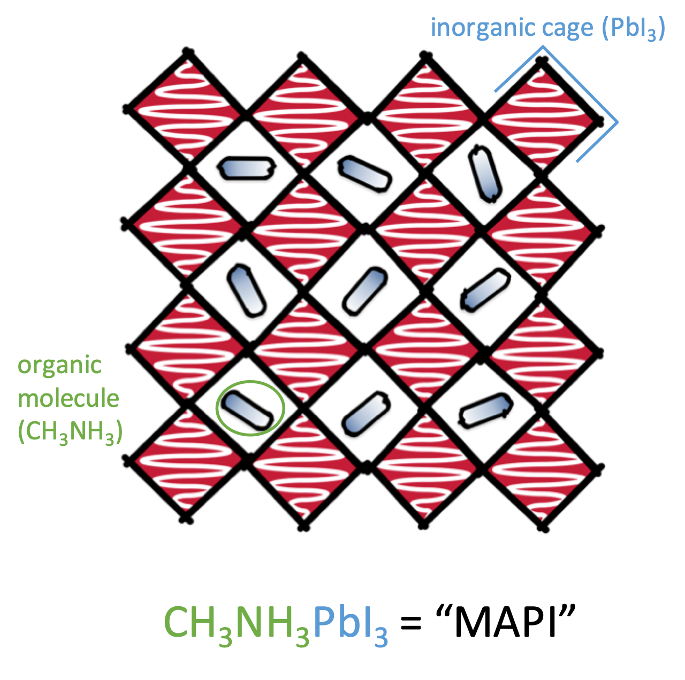
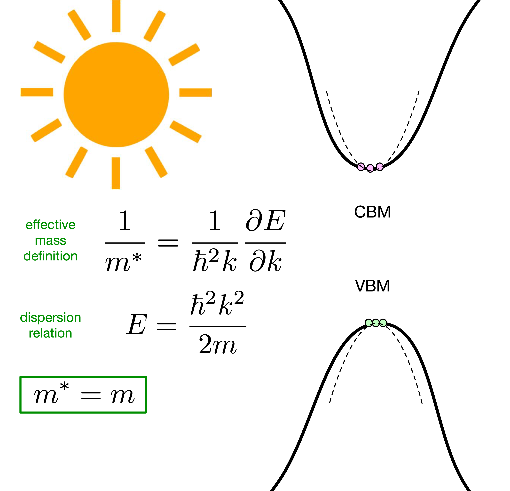
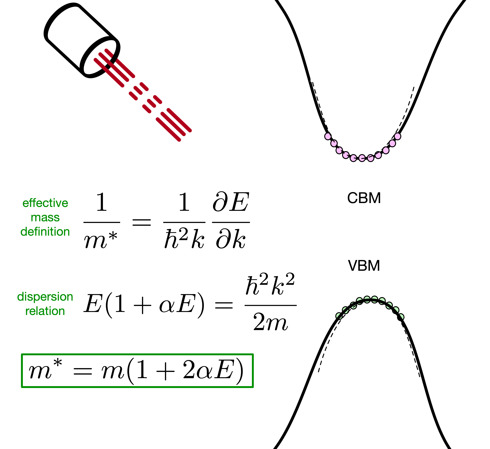
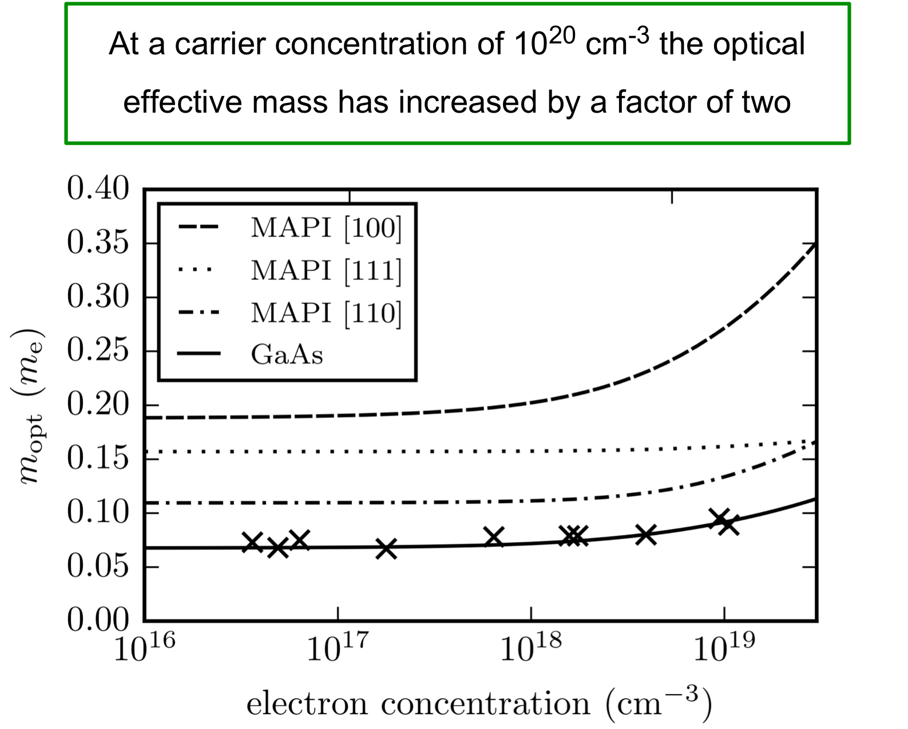
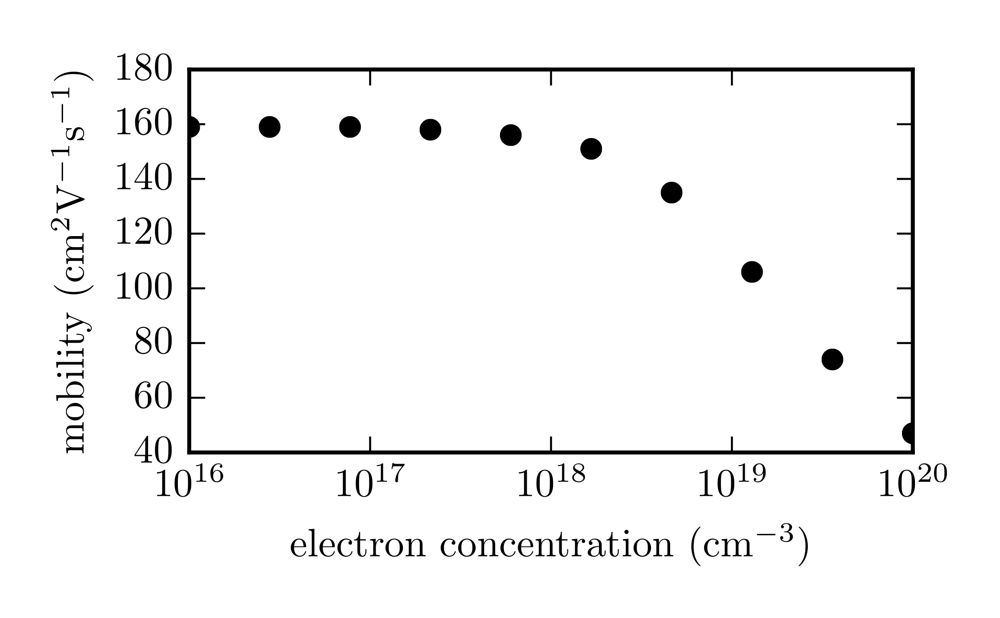
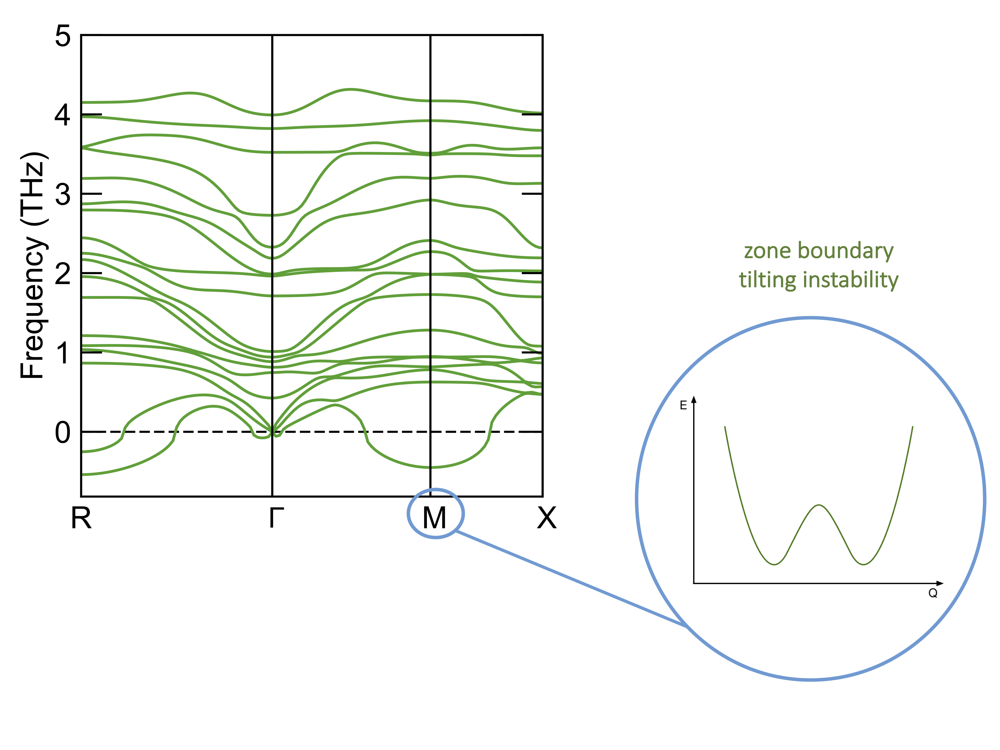
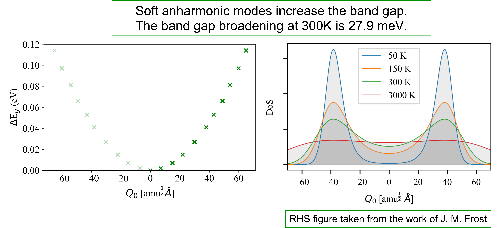
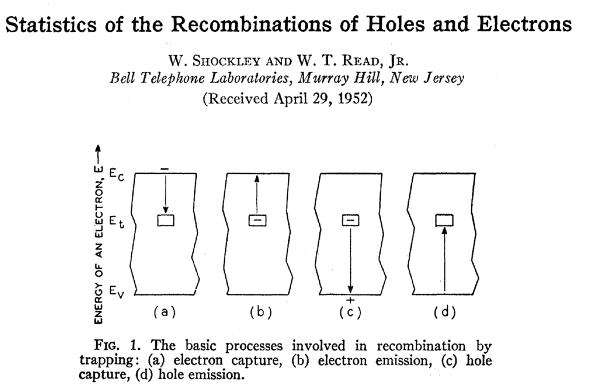

<!doctype html>
<html lang="en">
    <head>
        <meta charset="utf-8">
        <meta name="viewport" content="width=device-width, initial-scale=1.0, maximum-scale=1.0, user-scalable=no">

        <title>Slides Template</title>
        <link rel="stylesheet" href="./css/reveal.css">
        <link rel="stylesheet" href="./css/theme/white.css" id="theme">
        <link rel="stylesheet" href="./css/highlight/zenburn.css">
        <link rel="stylesheet" href="./css/print/paper.css" type="text/css" media="print">


    </head>
    <body>

        <div class="reveal">
            <div class="slides"><section  data-markdown><script type="text/template">

<!-- .slide: data-background="./images/background.png" -->

### Distortions and Defects in Hybrid Halide Perovskites



Lucy Whalley | PhD student  
Materials Design Group | ICL
</br>
[lucydot.github.io/slides](https://lucydot.github.io/slides)
</br>
</br>

</script></section><section  data-markdown><script type="text/template">

<!-- .slide: data-background="./images/background_tl.png" -->

#### Materials Design Group

</br>
</br>
Objective: to optimise and design new materials for energy generation and storage

</script></section><section  data-markdown><script type="text/template">

<!-- .slide: data-background="./images/background_tl.png" -->

#### Photovoltaic materials


<div align="center">
<small>
    
Efficiency data from *Solar cell efficiency tables (Version 53)*   
M. A. Green et al. | Prog Photovoltaics (2018) | [doi:10.1002/pip.3102](https://onlinelibrary.wiley.com/doi/abs/10.1002/pip.3102)
</small>
</div>

</script></section><section  data-markdown><script type="text/template">

<!-- .slide: data-background="./images/background_tl.png" -->

#### Hybrid halide perovskites 



</br>

</script></section><section  data-markdown><script type="text/template">

<!-- .slide: data-background="./images/background_tl.png" -->

#### Hybrid halide perovskites 
<center>
<video autoplay="true" loop="true" muted="true" width="800" align="center">
    <source src="./images/MAPI_animation.mp4" type="video/mp4" />
</video>
</center>
<div align="center">
<small>
*Perspective: Theory and simulation of hybrid halide perovskites*  
L.D. Whalley et al. | J. Chem. Phys (2017) | [doi:10.1063/1.4984964](https://aip.scitation.org/doi/10.1063/1.4984964)
</small>
</div>

</script></section><section  data-markdown><script type="text/template">

<!-- .slide: data-background="./images/background_tl.png" -->

#### Outline

1. Non-parabolic effective mass   
(Electronic band **Distortion**)
2. Band gap broadening  
(Anharmonic lattice **Distortion**)
3. Carrier trapping  
(H-centre **Defects**)

</script></section><section  data-markdown><script type="text/template">

<!-- .slide: data-background="./images/background_tl.png" -->

#### Non-degenerate semiconductor



</script></section><section  data-markdown><script type="text/template">

<!-- .slide: data-background="./images/background_tl.png" -->

#### Degenerate semiconductor



</script></section><section  data-markdown><script type="text/template">

<!-- .slide: data-background="./images/background_tl.png" -->

#### The alpha parameter ($eV^{-1}$)
<small>

| Material       | band         | [100] | [110]| [111]
| ------------- |-------------| -----|-----|-----|
| MAPI      | hole | 4.27 | 1.88| 1.32|
|      | electron      |  2.21 | 1.35| 0.16|
| CdTe | hole      |    1.25| 1.49| 1.64|
|  | electron     |    0.72 | 0.94| 1.02 |

*effmass: An effective mass package*   
L. D. Whalley | JOSS (2018) | [doi:10.21105/joss.00797](https://doi.org/10.21105/joss.00797)
</small>


</script></section><section  data-markdown><script type="text/template">

<!-- .slide: data-background="./images/background_tl.png" -->

#### The optical effective mass
<small>
>At a carrier concentration of $10^{20}\,\textrm{cm}^{-3}$ the optical effective mass has increased by a factor of two




*Impact of non-parabolic electronic band structure on the properties of PV materials*   
L. D. Whalley et al. | In Review | [arXiv:1811.02281v2](https://arxiv.org/pdf/1811.02281.pdf)

</small>
</script></section><section  data-markdown><script type="text/template">

<!-- .slide: data-background="./images/background_tl.png" -->

#### Electron mobility
<small>
>At a carrier concentration of $10^{20}\,\textrm{cm}^{-3}$ the electron mobility has decreased by a factor of three




Polaron mobility code available at [github.com/jarvist/PolaronMobility.jl](https://github.com/jarvist/PolaronMobility.jl)

</small>

</script></section><section  data-markdown><script type="text/template">

<!-- .slide: data-background="./images/background_tl.png" -->

#### Outline

1. Non-parabolic effective mass   
(Electronic band **Distortion**)
2. Band gap broadening  
(Anharmonic lattice **Distortion**)
3. Carrier trapping  
(H-centre **Defects**)


</script></section><section  data-markdown><script type="text/template">

<!-- .slide: data-background="./images/background_tl.png" -->

#### Lattice anharmonicity

<center>
<video autoplay="true" loop="true" muted="true" width="800" align="center">
    <source src="./images/tilting_animation.mp4" type="video/mp4" />
</video>
</center>


</script></section><section  data-markdown><script type="text/template">
<!-- .slide: data-background="./images/background_tl.png" -->

#### Lattice anharmonicity


<small>
Mode-mapping code available at [github.com/JMSkelton/ModeMap](https://github.com/JMSkelton/ModeMap)
</small>

</script></section><section  data-markdown><script type="text/template">
<!-- .slide: data-background="./images/background_tl.png" -->

#### Band gap broadening
<small>	
> Soft anharmonic octahedral tilting modes increase the band gap of CH$_3$NH$_3$PbI$_3$ 



*Phonon anharmonicity, lifetimes, and thermal transport in CH$_3$NH$_3$PbI$_3$ from many-body perturbation theory*  
L. D. Whalley et al. | Phys. Rev. B (2017) | [doi:10.1103/PhysRevB.94.220301](https://doi.org/10.1103/PhysRevB.94.220301)

</small>

</script></section><section  data-markdown><script type="text/template">

<!-- .slide: data-background="./images/background_tl.png" -->

#### Outline

1. Non-parabolic effective mass   
(Electronic band **Distortion**)
2. Band gap broadening  
(Anharmonic lattice **Distortion**)
3. Carrier trapping  
(H-centre **Defects**)


</script></section><section  data-markdown><script type="text/template">
<!-- .slide: data-background="./images/background_tl.png" -->

#### Killer defects
<small>


> "..among native point defects..only the iodine vacancy and its complexes
induce deep electron and hole trapping"  

M. -H. Du | Phys. Chem. Lett. (2015) | [DOI:10.1021/acs.jpclett.5b00199](https://doi.org/10.1021/acs.jpclett.5b00199)


</small>


</script></section><section  data-markdown><script type="text/template">

#### H-centres in MAPI
<!-- .slide: data-background="./images/background_tl.png" -->


<small>

*H-Center and V-Center Defects in Hybrid Halide Perovskites*    
L. D. Whalley et al. | ACS Energy Lett. (2017) | [doi:10.1021/acsenergylett.7b00995](https://doi.org/10.1021/acsenergylett.7b00995)

</small>

</script></section><section  data-markdown><script type="text/template">

### Summary
<!-- .slide: data-background="./images/background_tl.png" -->


</script></section><section  data-markdown><script type="text/template">

#### Thanks
<!-- .slide: data-background="./images/background_tl.png" -->


Presentation slides: [lucydot.github.io/slides](https://lucydot.github.io/slides/)

</script></section><section  data-markdown><script type="text/template">
<!-- .slide: data-background="./images/background_tl.png" -->

#### Questions?

Calculation details:

</script></section><section  data-markdown><script type="text/template">

### Extra slides

- hot carrier cooling work
- vibrational defect work


</script></section></div>
        </div>

        <script src="./lib/js/head.min.js"></script>
        <script src="./js/reveal.js"></script>

        <script>
            function extend() {
              var target = {};
              for (var i = 0; i < arguments.length; i++) {
                var source = arguments[i];
                for (var key in source) {
                  if (source.hasOwnProperty(key)) {
                    target[key] = source[key];
                  }
                }
              }
              return target;
            }

            // Optional libraries used to extend on reveal.js
            var deps = [
              { src: './lib/js/classList.js', condition: function() { return !document.body.classList; } },
              { src: './plugin/markdown/marked.js', condition: function() { return !!document.querySelector('[data-markdown]'); } },
              { src: './plugin/markdown/markdown.js', condition: function() { return !!document.querySelector('[data-markdown]'); } },
              { src: './plugin/highlight/highlight.js', async: true, callback: function() { hljs.initHighlightingOnLoad(); } },
              { src: './plugin/zoom-js/zoom.js', async: true },
              { src: './plugin/notes/notes.js', async: true },
              { src: './plugin/math/math.js', async: true }
            ];

            // default options to init reveal.js
            var defaultOptions = {
              controls: true,
              progress: true,
              history: true,
              center: true,
              transition: 'default', // none/fade/slide/convex/concave/zoom
              dependencies: deps
            };

            // options from URL query string
            var queryOptions = Reveal.getQueryHash() || {};

            var options = {"transition":"none"};
            options = extend(defaultOptions, options, queryOptions);
        </script>


        <script>
          Reveal.initialize(options);
        </script>
    </body>
</html>
